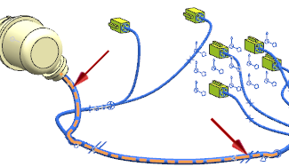
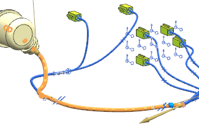
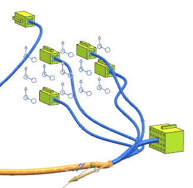
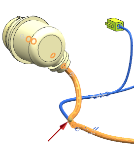
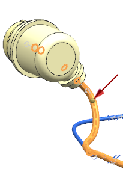
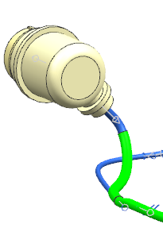

Assign the overstock to a path using the Point and Length method
-
On your Selection bar, from the Method list, select Path.
-
Select these two routing segments in any order.

The entire path is selected.

-
In the Application Method group, from the Method list, select Point and Length.
Your defining point should lie nearer the 24–pin connector end.

-
If it does not, in the Application Method group, click Reverse Direction
 .
.
You need to define this point as the start point for the overstock you are applying.
-
In the Application Method group, make sure that Point Defines is set to Start.
You want the overstock to be 350 mm long along this path from its start point.
-
In the Piece Length box, type 350 and 回车。
The two round markers on the path define where the overstock starts and ends.
The overstock ends a little short of the backshell.

Try a little longer length.
-
In the Piece Length box, type 440 and 回车。

The marker moves closer to the backshell.
-
In the Wrapping Settings group, make sure that the Wrap Type is set to Overlap Spiral.
The Overlap Percentage value is in terms of the width of the overstock.
-
Make sure that the Overlap Percentage is set to 50.
-
点击确定。
The vinyl overstock is represented by the green coating.

-
Close all parts without saving.